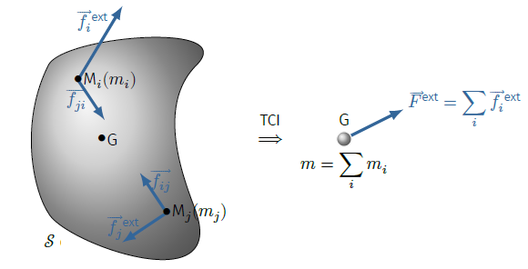
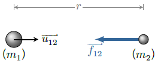
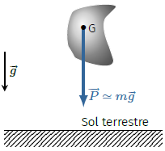
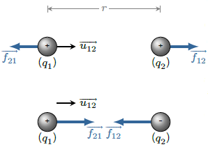
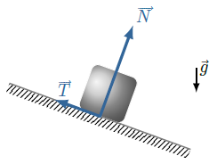
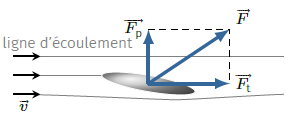
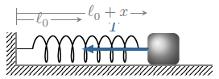

Un système mécanique sera assimilé à un point matériel si son état (position, mouvement) est
complètement décrit à l’aide de trois coordonnées spatiales au maximum.
De plus, un point matériel se caractérise par une propriété dynamique : la masse
inerte notée \(m\) mesurant l’inertie du mouvement. Cette quantité est un scalaire positif
et s’exprime en kilogrammes (symbole kg) dans le Système international d’Unités.
Quantité de mouvement
Un point matériel \(M\) de masse \(m\) en mouvement dans un référentiel \(\mathcal{R}\),
acquiert une quantité de mouvement (ou impulsion) :
$$
\quad \boxed{
\overrightarrow{p_{M}} = m\overrightarrow{v_M} }
$$
La quantité de mouvement d’un système de points se construit en sommant les contributions de
chaque point matériel. Ainsi, la quantité de mouvement d’un système mécanique
\(\mathcal{S}\) formé de \(N\) points matériels \(M_i\) de masse \(m_i\) s’écrit :
$$
\quad \overrightarrow{p_{\mathcal{S}}} = \sum_{i=1}^{N} m_i \overrightarrow{v_{M_i}}
= \sum_{i=1}^{N} m_i \frac{\mathrm{d}\overrightarrow{OM_i}}{\mathrm{d}t}
$$
Si maintenant nous définissons le centre d’inertie \(G\) comme étant le barycentre des
masses inertes :
$$
\quad \left( \sum_{i=1}^{N} m_i \right)\overrightarrow{OG} = m \overrightarrow{OG}
= \sum_{i=1}^{N} m_i \overrightarrow{OM_i}
$$
il vient alors, par dérivation :
$$
\quad m\frac{\mathrm{d}\overrightarrow{OG}}{\mathrm{d}t}
= \sum_{i=1}^{N} m_i \frac{\mathrm{d}\overrightarrow{OM_i}}{\mathrm{d}t}
$$
Ainsi, la quantité de mouvement d’un système de points matériels \(\mathcal{S}\), de masse
totale \(m\), est la même que celle d’un point matériel de même masse et situé au centre
d’inertie \(G\).
$$
\quad \boxed{
\overrightarrow{p_{\mathcal{S}}} = m\frac{\mathrm{d}\overrightarrow{OG}}{\mathrm{d}t}
= m\overrightarrow{v_G} }
$$
Principe d’inertie
Le principe d’inertie est un des piliers de la mécanique newtonienne. C’est Galilée qui en
eût l’intuition et Newton qui le formalisa dans ses Philosophiæ Naturalis Principia
Mathematica. L’idée sous-jacente du principe d’inertie est l’homogénéité de
l’espace : un corps isolé n’a aucune raison d’aller plus à droite qu’à gauche ni plus
vers l’arrière que vers l’avant ; le mouvement naturel est le mouvement rectiligne
uniforme.
Principe d’inertie : (première loi de Newton)
Dans un référentiel galiléen, un point matériel isolé (libre de toute influence extérieure)
conserve sa quantité de mouvement. En conséquence, sa trajectoire est rectiligne uniforme.
Insistons sur le fait que ce principe définit la notion de référentiel galiléen. On montrera
que tout référentiel en translation rectiligne uniforme par rapport à un référentiel
galiléen est lui-même galiléen. C’est pourquoi, il suffit de trouver un référentiel galiléen
pour en trouver une infinité. Cependant, le caractère galiléen étant lié à la validité du
principe d’inertie, il est tributaire de la précision avec laquelle on procède à cette
vérification. Ainsi, nous ne connaissons pas de référentiels absolument galiléens mais
seulement des référentiels approximativement galiléens sur une certaine échelle de temps.
Par exemple, le référentiel terrestre n’est pas galiléen mais les manifestations de son
caractère non galiléen sont, en première approximation, négligeables. Par conséquent, sauf
avis contraire, le référentiel terrestre sera considéré galiléen.
Principe fondamental de la dynamique
Nous venons de voir que dans certains référentiels, si les actions exercées sur un point
matériel \(M\) se compensent, sa quantité de mouvement se conserve. Ainsi, toute variation
de quantité de mouvement est la signature d’une action non compensée de l’environnement que
l’on modélise à l’aide du concept de vecteur force. La deuxième loi de Newton
dite aussi principe fondamental de la dynamique postule
simplement que l’action d’une force est de faire varier la quantité de mouvement de façon
proportionnelle.
Principe Fondamental de la Dynamique (PFD) : (seconde loi de Newton)
Dans un référentiel galiléen, un point matériel \(M\) soumis à une force
\(\overrightarrow{f}\) voit sa quantité de mouvement varier d’autant plus vite que la force
est importante. L’équation du mouvement est donnée par :
$$
\quad \boxed{
\frac{\mathrm{d}\overrightarrow{p_M}}{\mathrm{d}t}
= m \overrightarrow{a_M} = \overrightarrow{f} }
$$
On voit ici que la masse \(m\) mesure l’inertie du point matériel dans le sens où plus sa
masse est importante plus il sera difficile de modifier son vecteur vitesse.
La grandeur \(\overrightarrow{f}\) est un vecteur qui décrit l’action de l’environnement
extérieur sur le point \(M\). La force présente un point d’application (ici \(M\)), une
direction, un sens et une intensité. Notons bien que la seconde loi de Newton n’est pas une
définition de la force mais bien un principe d’évolution qui dit comment la nature se
comporte. C’est en associant ce postulat aux lois d’interaction que l’on peut prévoir les
mouvements.
Dans le Système international d’unités, une force se mesure en newtons (symbole
\(\mathrm{N}\)) en hommage à Isaac Newton. L’analyse dimensionnelle de l’équation du
mouvement permet de relier le newton aux autres unités de base du SI :
$$
\quad [f] = MLT^{-2} \quad \Rightarrow \quad 1 \mathrm{N} = 1 \mathrm{kg.m.s^{-2}}
$$
La seconde loi de Newton est valide tant que les vitesses envisagées sont petites devant
la vitesse de la lumière dans le vide \(c \simeq 3,0 10^8\,\rm{m/s}\).
Théorème du centre d’inertie
Principe des actions réciproques : (troisième loi de Newton)
Tout corps A exerçant une force sur un corps B, subit de la part de B une force d’intensité
égale, de même droite d’action et de sens opposé. Autrement dit, les actions réciproques
sont opposées et coaxiales.
Ce principe permet d’établir le théorème du centre d’inertie (ou théorème de la
résultante cinétique).
Considérons un système \(\mathcal{S}\) formé de \(N\) points matériels \(M_i\). Ce
système est le siège d’actions extérieures \(\overrightarrow{f_i^{ext}}\) et d’actions
internes \(\overrightarrow{f_{ji}}\) du point \(M_j\) sur le point \(M_i\).

Illustration du théorème du centre d’inertie.
Lorsque l’on applique le PFD à chaque particule \(M_i\) on obtient, dans le référentiel
d’étude supposé galiléen,
$$
\quad \frac{\mathrm{d}\overrightarrow{p_i}}{\mathrm{d}t}
= \overrightarrow{f_i^{ext}} + \sum_{j \neq i} \overrightarrow{f_{ji}}
$$
Par ailleurs, en vertu du principe des actions réciproques, les forces internes se
compensent deux à deux. Aussi, sommons toutes les équations du mouvement de chaque particule
de façon à annuler les actions internes :
$$
\quad \sum_{i} \frac{\mathrm{d}\overrightarrow{p_i}}{\mathrm{d}t}
= \frac{\mathrm{d}\overrightarrow{p_\mathcal{S}}}{\mathrm{d}t}
= \sum_{i} \overrightarrow{f_i^{ext}}
$$
Et compte tenu de la définition de la quantité de mouvement, on obtient le théorème du
centre d’inertie.
Théorème du centre d’inertie (TCI) :
Dans un référentiel galiléen, le centre d’inertie d’un système matériel vérifie l’équation
$$
\quad \boxed{
\frac{\mathrm{d}\overrightarrow{p_\mathcal{S}}}{\mathrm{d}t} = m\overrightarrow{a_G}
= \overrightarrow{F^{ext}} }
$$
où \(\overrightarrow{F^{ext}}\) désigne la résultante des forces extérieures.
Ainsi, le centre d’inertie d’un système matériel a le même mouvement qu’un point matériel
de masse \(m\) soumis à la force \(\overrightarrow{F^{ext}}\).
Le théorème du centre d’inertie signifie donc que le mouvement du centre d’inertie ne dépend
que de la connaissance des actions extérieures au système. Cependant il ne signifie pas que
l’on peut assimiler un système matériel à un point matériel (ici \(G\) affecté de la masse
\(m\)) au sens où la résultante des forces extérieures peut ne pas dépendre exclusivement
des coordonnées de \(G\) mais d’autres variables liées à la structure interne du système.
Pour s’en convaincre il suffit de faire dévaler à un oeuf une pente : suivant que
l’oeuf est cuit ou pas, on observera deux mouvements différents.
En revanche, si le système n’est pas trop grand par rapport aux corps avec lesquels il
interagit et suffisamment éloigné d’eux, alors la résultante des forces ne dépend que de la
position (et éventuellement de la vitesse) du centre d’inertie \(G\). Par ailleurs, si le
système est rigide et en translation (éventuellement associée à une rotation uniforme),
alors la dynamique du corps ne dépend que des coordonnées du centre d’inertie. Dans ce cas,
on peut assimiler le système à un point matériel de masse, la masse totale et de position
celle du centre d’inertie.
Par exemple, le mouvement orbital de la Terre peut être assimilé à celui d’une masse
ponctuelle située en son centre liée par gravitation avec les autres astres (notamment le
Soleil) de l’Univers. En effet, d’une part les distances qui séparent les astres sont très
grandes devant le diamètre terrestre (environ 13 000 km) et d’autre part la
Terre est une boule relativement rigide en rotation quasi uniforme. Il faut cependant avoir
à l’esprit qu’il s’agit bien d’une idéalisation car si l’on y regarde d’un peu plus près,
notre planète est constituée de parties déformables (un noyau liquide, des océans et une
atmosphère) qui ont une influence sur la rotation propre de la Terre ainsi que sur son
orbite. La Lune qui est l’astre le plus proche exerce une action légèrement différente sur
les océans et sur le centre de la Terre de sorte que cela modifie le mouvement relatif des
différentes parties.
Interactions fondamentales
Généralités
Dans l’état actuel de nos connaissances, l’étude de la matière depuis l’échelle subatomique
jusqu’à l’échelle cosmique permet de postuler l’existence de seulement quatre
interactions fondamentales permettant d’expliquer tous les phénomènes de la Nature. Ces
interactions se caractérisent par des intensités et des échelles d’action très différentes.
L’interaction gravitationnelle est l’interaction la plus faible dans la nature et
paradoxalement la première décrite. Cette interaction est responsable de la pesanteur, des
forces de marée et des phénomènes astrophysiques. Pendant plus de deux siècles, la
description newtonienne a prédominé jusqu’au début du
XXe siècle où Albert Einstein interpréta la
gravitation en termes géométriques, comme une déformation de l’espace-temps, nouveau concept
issu de la théorie de la relativité restreinte inventée quelques années auparavant.
Du fait de l’électroneutralité de la matière macroscopique, l’interaction électromagnétique
fut correctement modélisée plus tardivement puisqu’il a fallu attendre le début du
XIXe siècle et les travaux de Coulomb, Biot, Savart,
Laplace, Ampère, etc. L’interaction électromagnétique est à l’origine de la plupart des
phénomènes de notre quotidien : électricité, magnétisme, forces de contact, réactions
chimiques, propagation de la lumière, transport de l’information, cohésion des atomes… Les
travaux de Faraday sur l’induction magnétique ont permis de faire un pas décisif vers
l’unification du magnétisme et de l’électricité. C’est James Clerk Maxwell qui, en 1864,
réalise cette unification en proposant une nouvelle théorie dite théorie électromagnétique
dont l’une des conséquences est l’existence d’ondes électromagnétiques. Il faudra attendre
1887, huit ans après la mort de J.C. Maxwell, pour que Hertz confirme cette prédiction.
Après le succès de la mécanique quantique au début du
XXe siècle, on a cherché à décrire l’interaction
électromagnétique en termes de champs quantiques. Cette entreprise, qui débuta par les
travaux de Dirac (1928), aboutit à la naissance de l’électrodynamique quantique.
L’interaction forte, confinée à l’échelle subatomique, est à l’origine de la cohésion des
noyaux atomiques, de la fusion et de la fission nucléaires. C’est Hideki Yukawa qui élabore
la première théorie de l’interaction forte en 1935 mais il faudra attendre les années 1970
pour qu’une théorie plus fiable se fasse jour : la chromodynamique quantique, qui
décrit correctement l’interaction forte à condition de postuler l’existence de nouvelles
particules appelées quarks, qui, entre 1967 et 1995, furent toutes découvertes.
L’interaction faible, malgré ses conséquences vitales pour l’espèce humaine (Sans
l’interaction faible, le Soleil ne pourrait pas briller…), opère sur des échelles
sub-nucléaires (\(10^{−18}\,\rm{m}\)) avec une intensité relativement faible. Elle est à
l’origine de l’instabilité du neutron et explique notamment la radioactivité bêta.
Gravitation
La gravitation est une interaction attractive qui concerne toute la matière. Deux masses
ponctuelles s’attirent proportionnellement au produit de leur masse et à l’inverse du carré
de la distance qui les sépare.
Formellement, la force \(\overrightarrow{f_{12}}\) qu’exerce une masse ponctuelle \(m_1\)
sur une masse ponctuelle \(m_2\) située à une distance \(r\) s’écrit :
$$
\quad \boxed{
\overrightarrow{f_{12}} = -\mathscr{G} \frac{m_1m_2}{r^2} \overrightarrow{u_{12}} }
$$
où \(\overrightarrow{u_{12}} \) désigne le vecteur unitaire dirigé de \(m_1\) vers \(m_2\).

Interaction gravitationnelle.
La constante de gravitation universelle vaut :
$$
\quad \mathscr{G} = 6,67.10^{-11}\,\rm{kg^{-1}.m^3.s^{-2}}
$$
Lorsqu’on approche un point matériel \(M\) de masse \(m\) près d’un système matériel
\(\mathcal{S}\) ce dernier exerce sur \(M\) une force de gravitation qui dépend de la
répartition de la matière au sein de \(\mathcal{S}\). Si l’on décompose le système en un
ensemble de \(N\) points matériels \(P\) de masse \(m_i\), et en supposant que la force de
gravitation obéit au principe de superposition on pourra écrire que le système
\(\mathcal{S}\) exerce sur \(M\) une force
$$
\quad \overrightarrow{F} =
m \sum_{i=1}^{N} - \frac{\mathscr{G}m_i}{r_i^2} \overrightarrow{u_i}
= m \overrightarrow{g}(M)
$$
où \(\overrightarrow{u_i}\) est un vecteur unitaire orienté de \(P_i\) vers \(M\).
Par définition, \(\overrightarrow{g}(M)\) désigne le champ de gravitation au point
\(M\).
Le champ de gravitation produit par une répartition de masse à symétrie sphérique de centre
\(O\), vaut :
$$
\quad \boxed{
\overrightarrow{g}(r) = - \frac{\mathscr{G}m(r)}{r^2} \overrightarrow{u_r} }
$$
où \(r\) est la distance \(OM\), \(\overrightarrow{u_r}\) le vecteur unitaire radial
centrifuge et \(m(r)\) la masse contenue dans la sphère de rayon \(r\).
Une conséquence immédiate est qu’une boule à symétrie sphérique de masse \(m\) et de rayon
\(R\) produit, à l’extérieur de la boule, un champ de gravitation identique à celui
qu’exercerait une masse ponctuelle de masse \(m\) située au centre de la
boule :
$$
\quad \boxed{
\overrightarrow{g}(r \ge R) = - \frac{\mathscr{G}m}{r^2} \overrightarrow{u_r} }
$$
Sur Terre, la force de pesanteur \(\overrightarrow{P}\), ou poids, à l’origine de la chute
des corps est essentiellement due à la force de gravitation terrestre et l’on peut écrire
\( \overrightarrow{P} \simeq m\overrightarrow{g}\). Au voisinage du sol,
\(\overrightarrow{g}\) est uniforme et a pour intensité \(g = 9,8\,\rm{N.kg^{-1}}\). Tant
que la dimension du corps reste faible devant le rayon terrestre, on montre que le poids
s’applique au barycentre des masses et ne dépend que de la position du centre d’inertie.
C’est pourquoi lorsque l’on étudie la chute des corps on assimile ces derniers à des points
matériels.

Poids d’un corps.
Interaction électromagnétique
L’interaction électromagnétique possède deux aspects : la force électrique et la
force magnétique. La force électrique entre deux particules électriquement chargées est soit
attractive soit répulsive. L’état électrique des particules est caractérisé par leur charge
électrique \(q\), scalaire positif ou négatif. Deux charges ponctuelles de même signe
subissent des forces répulsives opposées et coaxiales en accord avec le principe des actions
réciproques. Lorsque les deux charges électriques sont de signes opposés, les forces sont
attractives.
En 1785, Charles-Augustin Coulomb met en évidence, à l’aide d’une balance de torsion qu’il a
réalisée lui-même, la loi qui porte désormais son nom. La force électrique (dite aussi force
coulombienne) entre deux charges ponctuelles immobiles dans le vide varie comme l’inverse du
carré de la distance qui les sépare et dépend de leur quantité de charge :
$$
\quad \boxed{ \overrightarrow{f_{12}} = K \frac{q_1q_2}{r^2} \overrightarrow{u_{12}} }
$$
où \(\overrightarrow{u_{12}} \) désigne le vecteur unitaire dirigé de \(q_1\) vers \(q_2\).

Forces de Coulomb.
Dans le Système international d’unités, les charges s’expriment en coulombs
(symbole : \(\rm{C}\)) et la constante \(K\) vaut
$$
\quad K = \frac{1}{4\pi\varepsilon_0} \simeq 9,0.10^{9}\,\rm{m.F^{-1}}
$$
où \(\varepsilon_0\) désigne la permittivité diélectrique du vide.
Considérons une distribution de charges ponctuelles \(q_i\) placées en \(P_i\) et une charge
test \(q\) placée en \(M\).
Cherchons à exprimer la force électrique qu’exerce cet ensemble de charges sur la charge
test. D’après le principe de superposition les forces qu’exercent chacune des charges
\(q_i\) sur la charge \(q\) ont pour résultante :
$$
\quad \overrightarrow{F}
= q \sum_{i=1}^{N} \frac{q_i}{4\pi\varepsilon_0} \frac{\overrightarrow{u_i}}{r_i^2}
= q \sum_{i=1}^{N} \frac{q_i}{4\pi\varepsilon_0} \frac{\overrightarrow{P_iM}}{P_iM^3}
= q \overrightarrow{E}(M)
$$
où \(\overrightarrow{E}(M)\) désigne le champ électrique créé en \(M\) par la
distribution de charges.
Notons que la force électrique et la force de gravitation sont mathématiquement
analogues : la masse et le champ de gravitation sont à la force de gravitation ce que
sont la charge et le champ électrique à la force électrique.
Mises en mouvement, ces charges font apparaître une composante supplémentaire dite force
magnétique. Par exemple si l’on considère deux charges électriques \(q_1\) et \(q_2\)
animées de vitesses respectives \(\overrightarrow{v_1}\) et \(\overrightarrow{v_2}\), la
force électromagnétique que produit \(q_1\) sur \(q_2\) s’écrit sous la forme :
$$
\quad \boxed{
\overrightarrow{f_{12}} = q_2 \overrightarrow{E_1}
+ q_2 \overrightarrow{v_2} \wedge \overrightarrow{B_1} }
$$
où \(\overrightarrow{B_1}\) désigne, par définition, le champ magnétique produit par
la charge \(q_1\).
Notons que la force magnétique \( q_2 \overrightarrow{v_2} \wedge \overrightarrow{B_1}\) est
toujours orthogonale à \(\overrightarrow{v_2}\) et de ce fait viole le principe des actions
réciproques puisqu’elle n’est pas nécessairement portée par la droite qui joint les deux
charges.
Les champs magnétiques sont produits à l’aide de courants électriques ou de matériaux
aimantés et se mesurent en teslas (symbole : \(\rm{T}\)) dans le Système
international d’unités.
Les interactions nucléaires
Les interactions faible et forte ont la particularité d’être des interactions de très courte
portée. Elles agissent sur une distance caractéristique de l’ordre du femtomètre
(\(10^{−15}\,\rm{m}\)). À cette échelle, la physique newtonienne n’opère plus et une
description quantique est nécessaire. C’est pourquoi nous n’envisagerons que les
interactions électromagnétique et gravitationnelle par la suite.
Lois phénoménologiques
Lorsque deux corps entrent en contact, dans un premier temps, ce sont les atomes en surface
qui interagissent via des interactions de courte portée de nature électromagnétique,
lesquelles seront responsables de l’apparition, à l’échelle macroscopique, de ce que l’on
appelle les forces de contact. Dans un deuxième temps, si ces actions de contact sont
suffisamment importantes, elles peuvent avoir un effet au sein même du solide et perturber
la cohésion du corps ce qui provoque une déformation macroscopique. Nous donnons ici
quelques lois phénoménologiques associées à ces actions, sans chercher à les justifier par
des modèles atomiques.
Contact solide-solide
Le contact entre deux solides fait apparaître deux forces : une force
\(\overrightarrow{N}\) normale au support et une force \(\overrightarrow{T}\) tangentielle
au support, dite force de frottement solide qui s’oppose au glissement.

Forces de contact solide-solide.
Les lois du frottement solide se résument ainsi :
En l’absence de frottement \(T=0\).
En présence de frottement on distingue deux cas de figure.
Il y a adhérence et donc absence de glissement tant que \(T \lt \mu_s N\) où
\(\mu_s\) désigne le coefficient de frottement statique.
Lorsque la condition ci-dessus ne peut plus être respectée, il y a glissement avec
frottement. La force de frottement est opposée à la vitesse de glissement et
\(T = \mu_dN\) où \(\mu_d\) désigne le coefficient de frottement
dynamique.
Les coefficients \(\mu_s\) et \(\mu_d\) sont assez proches et en général on a
\(\mu_s \gt \mu_d\).
Contact fluide-solide
Considérons un solide plongé dans un fluide de masse volumique \(\rho_f\). Nous
distinguerons deux cas suivant qu’il y a écoulement ou non autour du solide.
Fluide au repos
Lorsque le fluide est à l’équilibre dans le référentiel lié au solide, les seules forces à
considérer sont des forces de pression. La poussée d’Archimède \(\overrightarrow{\Pi}\)
désigne la résultante de ces forces dans le cas courant où le fluide est à l’équilibre dans
le champ de pesanteur.
Théorème d’Archimède
Tout corps immergé partiellement ou totalement dans un fluide subit de la part de celui-ci
une poussée verticale, dirigée vers le haut, appelée poussée d’Archimède, dont
l’intensité est égale au poids du volume de fluide déplacé.
Le point d’application de cette force est le centre de poussée ; il est différent, en
général, du centre de gravité.
Fluide en mouvement
Supposons un solide plongé dans un fluide en écoulement permanent de vitesse
\(\overrightarrow{v}\) loin de l’obstacle.
L’écoulement autour de l’obstacle fait apparaître, en plus de la poussée d’Archimède, des
forces de friction, dites forces de viscosité dont la résultante se décompose en deux
actions.
La traînée \(\overrightarrow{F_t}\) de même sens que \(\overrightarrow{v}\) et donc opposée
à la vitesse relative du solide par rapport au fluide, est toujours présente dans un fluide
visqueux ; cette force est responsable de la résistance au déplacement dans un
fluide.
La portance \(\overrightarrow{F_p}\), orthogonale à la vitesse, est responsable du maintien
en vol des avions (quand elle est opposée au poids) ou du maintien au sol de certains
véhicules de course (elle est dans ce cas dirigée vers le sol).

Traînée et portance.
Pour des raisons de symétrie, la portance disparaît quand l’obstacle présente un axe de
symétrie de même direction que \(\overrightarrow{v}\). C’est pourquoi, un corps sphérique ne
subit pas de portance, quelle que soit la direction dans laquelle il se déplace. (Une
portance apparaît cependant lorsque l’obstacle sphérique est en rotation sur
lui-même : c’est l’effet Magnus.)
Une analyse dimensionnelle montre que ces forces peuvent s’exprimer ainsi :
$$
\quad \begin{align}
F_t & = \frac{1}{2}\rho_f S C_x v^2 \\
F_p & = \frac{1}{2}\rho_f S C_z v^2
\end{align}
$$
où \(C_x\) et \(C_z\) désignent les coefficients de traînée et de portance,
\(\rho_f\) la masse volumique du fluide, \(v\) la vitesse d’écoulement et \(S\) une section
droite de l’obstacle.
Les coefficients \(C_x\) et \(C_z\) sont sans dimension et dépendent de façon complexe du
régime d’écoulement.
Pour simplifier, on retiendra les deux cas limites suivants.
À grande vitesse ces coefficients sont quasi constants et les forces varient alors de façon
quadratique avec la vitesse.
À faible vitesse, les coefficients varient comme l’inverse de la vitesse de sorte que les
forces de friction varient proportionnellement à la vitesse. Dans le cas particulier d’un
corps en mouvement lent suivant son axe de symétrie, la force de frottement fluide qu’il
subit s’écrit \(F_t = \alpha v\) avec \(\alpha = C^{te}\).
Loi de Stokes
Stokes a montré que dans le cas d’un corps sphérique de rayon \(r\), le coefficient
\(\alpha\) vaut \(6 \pi \eta r\) où \(\eta\) désigne la viscosité du fluide.
Cette loi n’est valide qu’à condition que le nombre de Reynolds \(R_e = 2 \rho_fvr / \eta\)
soit petit devant 1.
La physique des suspensions (particules solides mélangées à un liquide) et des émulsions
(mélange non miscible de gouttelettes liquides dans un autre liquide) est régie par cette
loi.
Tension
Lorsque l’on tire sur un fil extensible (élastique) ou un ressort celui-ci s’allonge, dans
un premier temps, proportionnellement à la force appliquée. On dit que le comportement est
élastique. Ce comportement est caractéristique de la matière solide et est réversible. En
revanche, lorsque la force dépasse une valeur seuil, le comportement n’est plus réversible.
On obtient alors un comportement plastique qui prévient en général la rupture.
Considérons le cas du ressort à spires non jointives : lorsque l’on étire légèrement
un ressort d’une longueur \(\Delta l\), il produit sur l’agent qui le déforme une force,
dite tension élastique, proportionnelle à \(\Delta l\) dans une direction opposée à
l’étirement. De même si l’on comprime un peu le ressort d’une quantité \(\Delta l\), ce
dernier produit une force identique mais dans la direction opposée.
Formellement, en définissant le vecteur unitaire \(\overrightarrow{u_x}\) orienté de
l’extrémité fixe vers l’extrémité mobile du ressort, cela donne :
$$
\quad \boxed{
\overrightarrow{T} = - k(l-l_0)\overrightarrow{u_x} }
$$
avec \(l_0\) la longueur du ressort au repos, \(l\) sa longueur et \(k\) la constante de
raideur.

Tension élastique.
La constante de raideur est une donnée phénoménologique qui mesure la résistance à
l’allongement et qui s’exprime en \(\rm{N.m^{-1}}\).
Notons que pour un élastique, la tension n’existe que si le fil est tendu, c’est-à-dire si
\(l \geq l_0\). Par contre, un ressort peut être comprimé ou étiré de telle sorte que la
loi est valable quel que soit le signe de l’allongement \( x= l-l_0\).